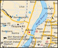

|
Capital of British India till 1911, Kolkata or
Calcuta is a city that is known for its cultural
scene and heritage. Kolkata is the gateway to
Eastern India. Home to
 four Nobel laureates –
Ronald Ross, Rabindranath Tagore, Mother Teresa
and Amartya Sen, Kolkata is the nerve centre of
intellect and human values. Kolkata dons its
best colors for the tourist between September
and March. Food is Calcutta's greatest
indulgence. Bengalis love to eat, and they are
great hosts.
For four days in September-October, Calcutta
comes to a standstill as almost everyone in the
city throngs its streets, visiting the pandals
dressed in their festive best Incense,
drumbeats, chants, laughter, the sizzle and
smell of food characterize this festival
dedicated to Goddess Durga.
HOW TO REACH
BY AIR
Netaji Subhas Chandra Bose International
Airport, is about 20 km from the city centre and
connects Kolkata to major cities in India and
abroad.
BY RAIL
Howrah and Sealdah are the two major railway
terminals in the city. Kolkata is the
headquarter of Eastern Railway and South Eastern
railway. Howrah is one of the busiest railway
stations in India.
BY ROAD
Kolkata is well connected with other parts of
West Bengal and other neighbouring states
through a good network of roads including NH-2
or GT road.
WHAT TO SEE
DAKSHINESWAR TEMPLE
Dakshineswar Kali Temple is situated alongside
the Vivekananda Bridge north of Kolkata, about
20 km. from BBD Bagh. Dakshineshwar Temple
dedicated to Goddess Kali, is situated to the
north of Kolkata, a place where Ramakrishna
Paramhansa, the spiritual guru of Swami
Vivekananda, lived most of his life. The temple,
in conventional Nava-ratna style, measures 46
feet square and rises over 100 feet high. It is
one of the largest temples of Kolkata. The roof
is curved and the second story is capped by nine
chhatris. The Panchavati, a congregation of five
ancient trees, is a spot for peaceful
meditation.
BELUR MATH
Belur Math is the most enchanting temple in
Belur. Belur Math, the headquarters of
Ramakrishna Mission, is situated to the north of
the city across the Vivekananda Bridge from
Dakshineshwar. The world-famous temple was built
by Shri Ramakrishna’s beloved disciple Swami
Vivekananda in 1938. Belur Math is located on
the western bank of Hooghly in Howrah district.
HOWRAH BRIDGE
The busy Rabindra Setu or Howrah Bridge connects
the city to Kolkata's Burrabazar. Constructed in
1939 and the bridge was opened to traffic in
1943 which cost as estimated Rs.333 crores,
built from 26,500 tons of steel.
The eight-lane bridge carries a steady flow of
more than lakh vehicles and 2 million commuters
every day. The best way to enjoy its stately
beauty is to view it from the middle of the
river where photography is strictly prohibited.
The ferries running from below Howrah Station
are a more convenient way to cross the river and
give a good view of the bridge.
EDEN GARDEN
Eden Garden is the oldest cricket ground in
India and is also considered one of the finest
in the world. Considered to be the largest
cricket stadium in the world the Eden Gardens
boast of a capacity of 1,20,000.
DIAMOND HARBOUR
Diamond harbour is a small city situated at the
point where river Ganges turns south, just
before reaching the sea. It is located at a
distance of about 48 kms from Kolkata. River
cruises are available here. The cruises are very
popular with the tourists. Equally important are
the pilgrim centre Sharisha Ramakrishna Mission
Ashram and the remains of a Portuguese Fort. It
takes less than two hours to reach the place
from the city center.
SUNDERBANS
Sunderbans lies towards the South East of
Kolkata. Buses take tourists to Sonakhali, from
Sonakhali boats are available to reach Basanti.
From Basanti it takes about an hour to reach
Sunderbans. Sunderbans constitutes a part of the
largest delta in the world. The three major
rivers of the Eastern India, Ganga, Brahmaputra
and Meghna slow down towards the lower Gangetic
Plains, producing the swamps of Sunderbans. It
consists of the largest mangrove forests in the
world.
Sunderbans has been given the status of World
Heritage Site by UNESCO. The Royal Bengal Tiger
can be easily spotted in the Sunderbans.
Sunderbans is also famous for rare bird species
found in the region include Swamp Patridge,
Brown-winged Kingfisher, Grey Headed Lapwing,
Palass Fish Eagle and Mangrove Whistler.
|


 Spa Vacations
Spa Vacations


 Kerala
Kerala